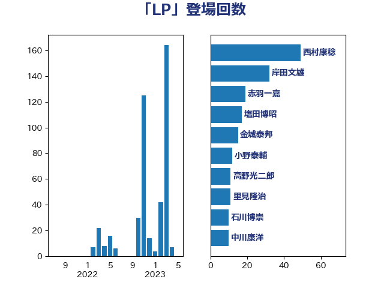

単語「LP」

| 西村康稔 | 自由民主党 | 49 回 |
| 岸田文雄 | 自由民主党 | 32 回 |
| 赤羽一嘉 | 公明党 | 19 回 |
| 塩田博昭 | 公明党 | 17 回 |
| 金城泰邦 | 公明党 | 15 回 |
| 小野泰輔 | 日本維新の会 | 12 回 |
| 高野光二郎 | 自由民主党 | 11 回 |
| 里見隆治 | 公明党 | 11 回 |
| 石川博崇 | 公明党 | 10 回 |
| 中川康洋 | 公明党 | 10 回 |
| 中川宏昌 | 公明党 | 10 回 |
| 福岡資麿 | 自由民主党 | 9 回 |
| 鈴木俊一 | 自由民主党 | 8 回 |
| 鈴木義弘 | 国民民主党 | 7 回 |
| 芳賀道也 | 国民民主党 | 7 回 |
| 斎藤アレックス | 国民民主党 | 7 回 |
| 後藤茂之 | 自由民主党 | 7 回 |
| 田村貴昭 | 日本共産党 | 6 回 |
| 片山大介 | 日本維新の会 | 6 回 |
| 後藤祐一 | 立憲民主党 | 6 回 |
| 小沼巧 | 立憲民主党 | 6 回 |
| 斉藤鉄夫 | 公明党 | 5 回 |
| 岡田直樹 | 自由民主党 | 5 回 |
| 下野六太 | 公明党 | 5 回 |
| 高木陽介 | 公明党 | 4 回 |
| 自見はなこ | 自由民主党 | 4 回 |
| 稲富修二 | 立憲民主党 | 4 回 |
| 田島麻衣子 | 立憲民主党 | 4 回 |
| 岩田和親 | 自由民主党 | 4 回 |
| 岩渕友 | 日本共産党 | 4 回 |
| 小宮山泰子 | 立憲民主党 | 4 回 |
| 大島敦 | 立憲民主党 | 4 回 |
| 今枝宗一郎 | 自由民主党 | 4 回 |
| 中谷真一 | 自由民主党 | 4 回 |
| 船橋利実 | 自由民主党 | 3 回 |
| 平林晃 | 公明党 | 3 回 |
| 安江伸夫 | 公明党 | 3 回 |
| 鈴木敦 | 国民民主党 | 2 回 |
| 伊藤渉 | 公明党 | 2 回 |
| 中山展宏 | 自由民主党 | 2 回 |
| おおつき紅葉 | 立憲民主党 | 2 回 |
| 鰐淵洋子 | 公明党 | 1 回 |
| 高橋光男 | 公明党 | 1 回 |
| 馬淵澄夫 | 立憲民主党 | 1 回 |
| 青柳仁士 | 日本維新の会 | 1 回 |
| 野田国義 | 立憲民主党 | 1 回 |
| 西田実仁 | 公明党 | 1 回 |
| 若松謙維 | 公明党 | 1 回 |
| 竹内譲 | 公明党 | 1 回 |
| 稲津久 | 公明党 | 1 回 |
| 福島伸享 | 無所属 | 1 回 |
| 礒崎哲史 | 国民民主党 | 1 回 |
| 片山さつき | 自由民主党 | 1 回 |
| 滝波宏文 | 自由民主党 | 1 回 |
| 渡辺創 | 立憲民主党 | 1 回 |
| 浜口誠 | 国民民主党 | 1 回 |
| 浅野哲 | 国民民主党 | 1 回 |
| 永岡桂子 | 自由民主党 | 1 回 |
| 村田享子 | 立憲民主党 | 1 回 |
| 末松義規 | 立憲民主党 | 1 回 |
| 山際大志郎 | 自由民主党 | 1 回 |
| 小森卓郎 | 自由民主党 | 1 回 |
| 城井崇 | 立憲民主党 | 1 回 |
| 中野洋昌 | 公明党 | 1 回 |